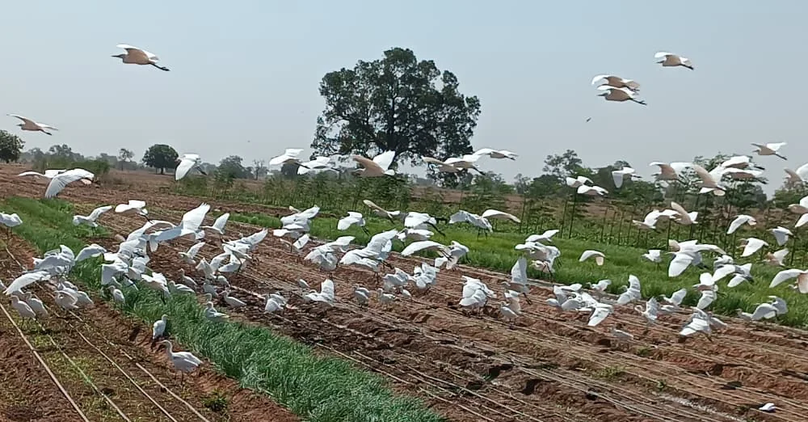
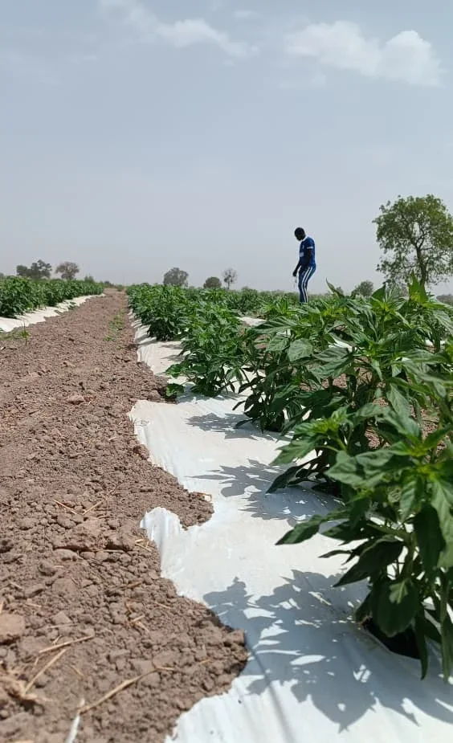
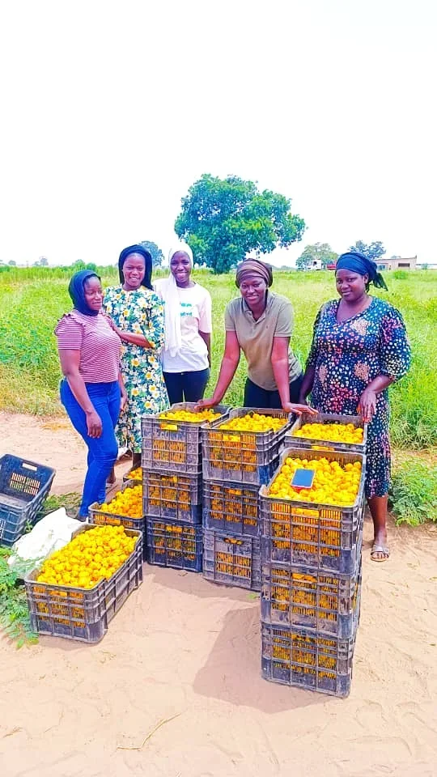
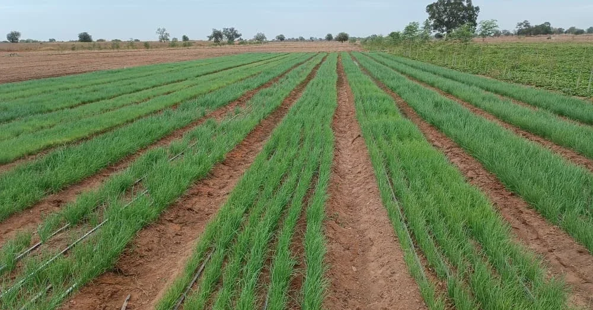
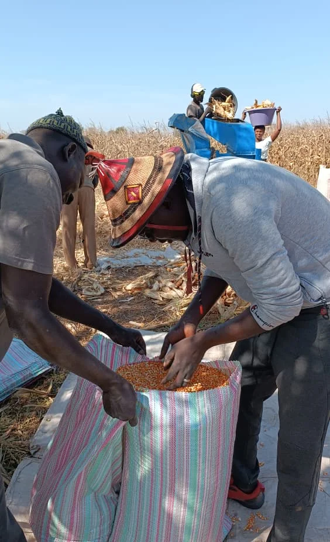
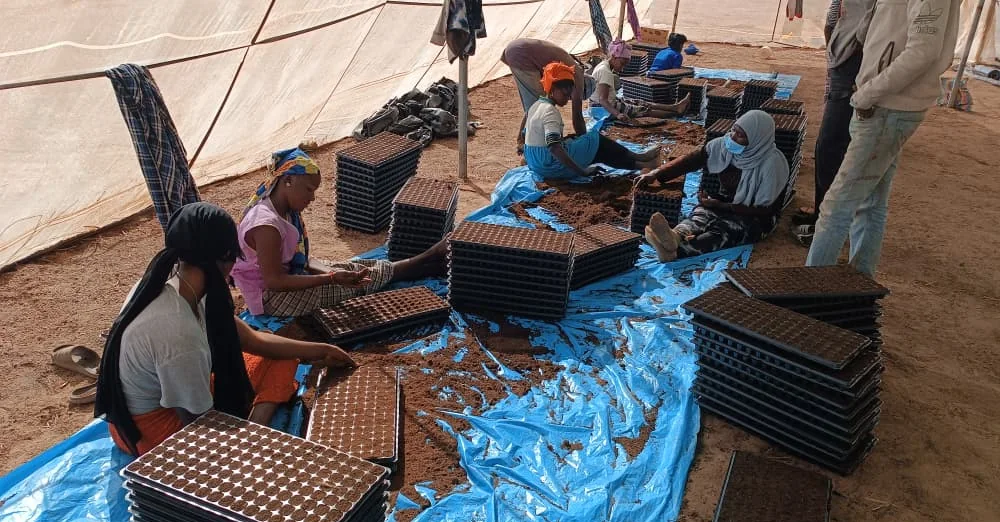

Qualité & rigueur
Des exigences de production, de récolte et de conditionnement au service de la qualité et de la sécurité alimentaire.
La qualité des produits, le respect des personnes et la préservation des ressources guident le développement du domaine.



Produire et valoriser des produits agricoles de qualité, approvisionner les marchés et contribuer au développement économique local, tout en préservant les ressources naturelles.
Des exigences de production, de récolte et de conditionnement au service de la qualité et de la sécurité alimentaire.
Le respect des droits des collaborateurs et des règles sociales en vigueur au Sénégal.
Des pratiques agricoles durables et une gestion raisonnée des ressources.
Une contribution à la vie sociale, sanitaire et culturelle des communautés où le domaine est implanté.
L’expérience des équipes associée à l’amélioration des techniques agricoles.
Des systèmes de suivi permettent de retracer le parcours des mangues, du verger jusqu’à leur commercialisation.

Envers l’environnement

DAN exerce ses activités dans le respect des lois et règlements du Sénégal ainsi que des conventions collectives en vigueur. L’entreprise assure les cotisations sociales et la couverture maladie prévues pour ses collaborateurs. Le domaine compte dix-neuf salariés permanents ; selon les périodes de production et de récolte, les effectifs saisonniers peuvent atteindre cent cinquante personnes par jour, sur des périodes de trois à six mois.

Envers les communautés
Le domaine contribue à l’épanouissement socioculturel des communautés de ses zones d’activité. Cet engagement se traduit par des actions concrètes :
Qualité & reconnaissance
La présentation du domaine cite GLOBALG.A.P., Tesco Nurture et GRASP, ainsi que les audits sociaux SMETA, dans le cadre de ses démarches de qualité et de responsabilité sociale.
La qualité, la traçabilité et la sécurité alimentaire s’inscrivent dans une démarche suivie tout au long du parcours des produits.